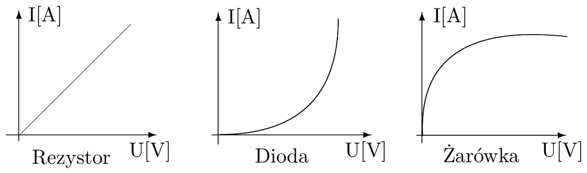
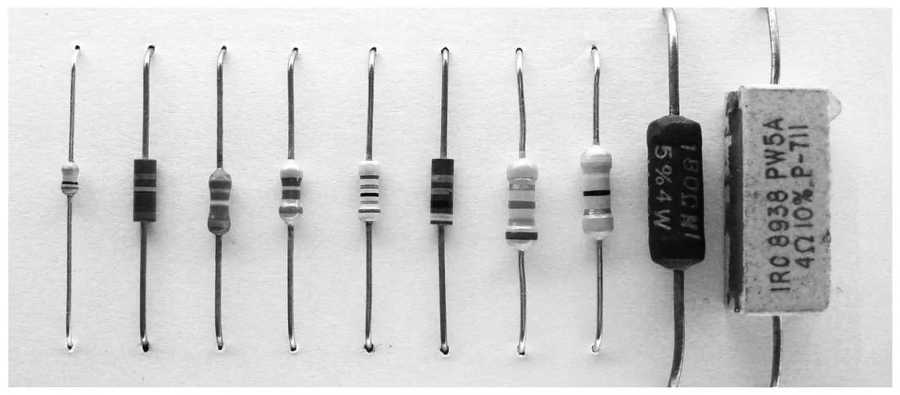
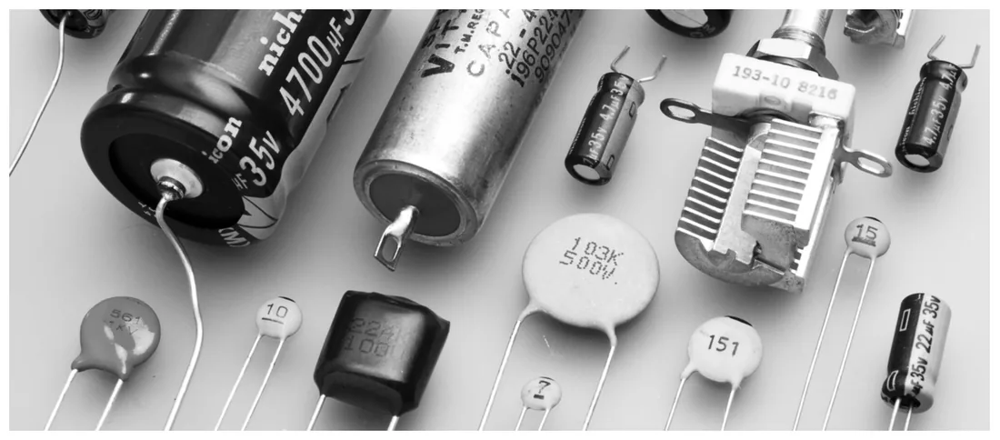
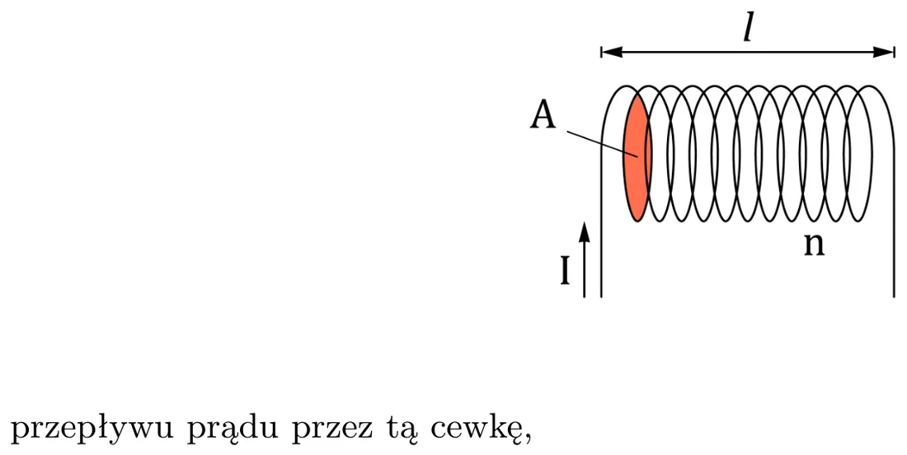
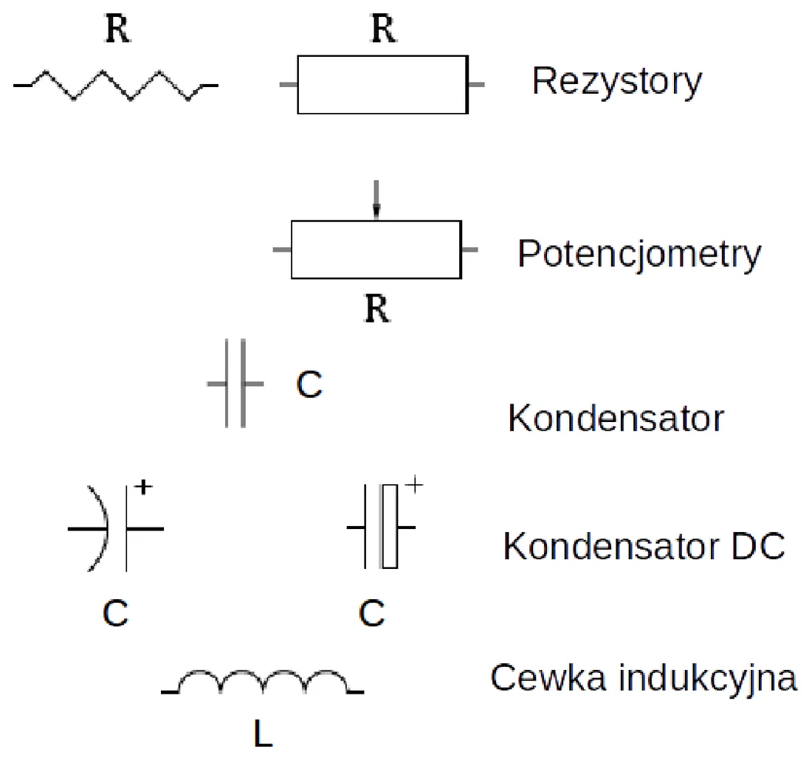
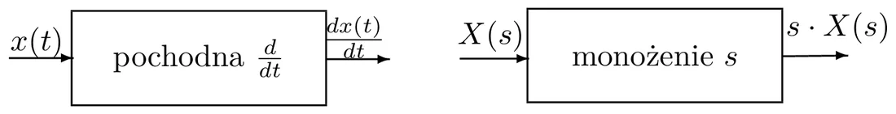
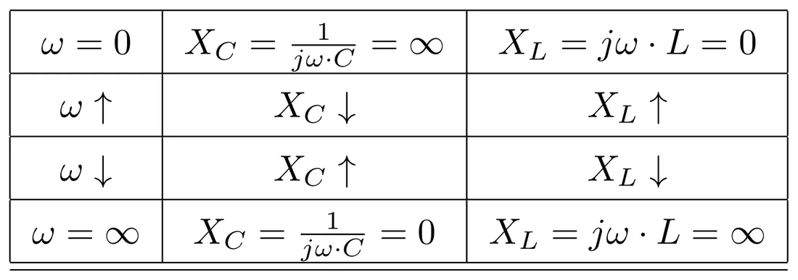
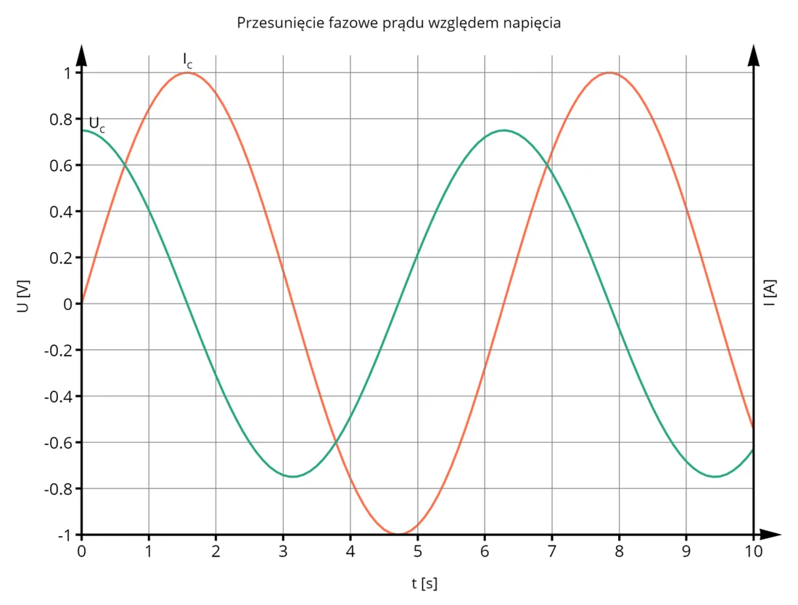

Приставки — чтобы не писать столько нулей
В электронике числа бывают очень большими или очень маленькими, поэтому их записывают как A × 10n и пользуются приставками.
| Приставка | Символ | Степень 10 | Множитель | Пример |
|---|---|---|---|---|
| гига | G | 9 | 1 000 000 000 | 1 ГГц |
| мега | M | 6 | 1 000 000 | 1 МОм = 1 000 000 Ом |
| кило | k | 3 | 1 000 | 1 кОм = 1000 Ом |
| милли | m | −3 | 0,001 | 20 мА = 0,02 А |
| микро | µ | −6 | 0,000 001 | 1 мкс |
| нано | n | −9 | 0,000 000 001 | 10 нФ = 0,000 000 01 Ф |
| пико | p | −12 | 0,000 000 000 001 | 36 пФ |
Совет от автора сайта
На калькуляторе вводи приставки как степени: 10 нФ — это 10E-9, 100 кГц — 100E3. Больше всего ошибок на лабораторных 3 и 4 — из-за путаницы «n» и «µ».
Проводники, изоляторы, полупроводники
- Проводник — внешнее напряжение вызывает ток (металлы).
- Изолятор — электроны крепко связаны с ядрами атомов, и электрическое поле их не «вырвет»; ток не течёт.
- Полупроводник — проводит или нет в зависимости от условий. О них — лекция 4.
Постоянный (DC) и переменный (AC) ток
- DC (direct current) — ток течёт в одну сторону и имеет постоянное значение. Батарейка, блок питания.
- AC (alternating current) — направление тока периодически меняется; среднее значение за период равно нулю. Розетка, сигнал с генератора.
По-простому
DC — это река: вода всё время течёт в одну сторону. AC — это волна у берега: вода идёт то вперёд, то назад, а «в среднем» остаётся на месте.
Пассивные и активные элементы
- Пассивные — не требуют питания для работы. Энергия на выходе не может быть больше, чем на входе. Это резистор, конденсатор, катушка.
- Активные — требуют питания; благодаря ему энергия на выходе может быть больше, чем на входе (транзистор, усилитель).
Резистор
Сопротивление — это отношение напряжения на концах элемента к току, который через него течёт:
Оно зависит от материала и размеров:
где ρ — удельное сопротивление материала, L — длина, A — площадь сечения. Длиннее и тоньше провод — больше сопротивление.


Резистор — линейный элемент: вдвое большее напряжение даёт вдвое больший ток (прямая на графике). Диод и лампочка так себя не ведут.


Конденсатор
Две металлические обкладки, разделённые изолятором. Накапливает заряд Q (в кулонах [Кл]); чем больше заряд, тем больше напряжение между обкладками.
Ёмкость C измеряется в фарадах. Для двух параллельных пластин площадью A на расстоянии d:
(ε0 = 8,84 × 10−12 Ф/м — электрическая постоянная, εr — относительная диэлектрическая проницаемость изолятора.) Больше пластины и меньше зазор — больше ёмкость.


По-простому
Конденсатор — это ведёрко для заряда. Постоянный ток наполняет его — и всё, дальше ничего не течёт. При переменном токе ведёрко по очереди наполняется и опустошается, поэтому в цепи всё время что-то течёт. Поэтому конденсатор не пропускает DC, но пропускает AC — и тем охотнее, чем быстрее изменения.
Катушка индуктивности
Виток провода. Протекающий ток создаёт магнитное поле, в котором накапливается энергия.
Индуктивность L (в генри) растёт с квадратом числа витков n, с площадью сечения A и магнитной проницаемостью µ, а убывает с длиной катушки l.
Когда ток меняется, катушка создаёт напряжение, которое этому изменению противодействует (электродвижущая сила, ЭДС):


По-простому
Катушка — это тяжёлый маховик: его трудно раскрутить и трудно остановить. Постоянный ток проходит через неё свободно (маховик крутится ровно), а быстрым изменениям тока катушка сопротивляется — тем сильнее, чем они быстрее.
Обозначения на схемах


Преобразование Лапласа — зачем программисту такое чудовище
Уравнения катушки и конденсатора содержат производные и интегралы. Преобразование Лапласа — это «переводчик», который превращает описание во времени x(t) в описание через комплексную переменную s, — и тогда вместо дифференцирования и интегрирования достаточно умножать и делить.
Из всей части лекции о преобразовании нужно запомнить три вещи:
| Во временной области | В области Лапласа |
|---|---|
| производная ddt | умножение на s |
| интеграл ∫ … dt | умножение на 1s |
| синусоидальный сигнал с круговой частотой ω | подставляем s = jω (это уже преобразование Фурье) |
Здесь ω = 2πf — круговая частота (по-польски pulsacja, рад/с), f — частота (Гц), а j = √ — мнимая единица. Электронщики пишут j, а не i, потому что i — это ток.


Комплексные числа за 30 секунд
Комплексное число — это точка на плоскости: Z = a + jb. Часть a откладываем по горизонтали (действительная), b — по вертикали (мнимая).
- Длина стрелки от нуля до точки: |Z| = √ — это модуль.
- Угол стрелки относительно горизонтальной оси: φ — это фаза (аргумент).
- Показательная форма: Z = |Z| · ejφ, причём a = |Z| · cos φ, b = |Z| · sin φ.
- 1j = −j (пригодится для конденсатора).
На слайдах есть ещё длинный список готовых преобразований (sin, cos, экспонента…). На лабораторных этого предмета они не нужны.
Импеданс — «сопротивление» для переменного тока
Закон Ома работает и для катушек с конденсаторами, если вместо сопротивления R подставить импеданс Z:
- действительная часть R — активное сопротивление (rezystancja),
- мнимая часть X — реактивное сопротивление (reaktancja; сопротивление катушки или конденсатора; зависит от частоты).
Катушка
Из уравнения vL(t) = L · diLdt после перехода к Лапласу (производная → умножение на s): VL(s) = sL · IL(s), значит
Конденсатор
Из уравнения vC(t) = 1C ∫ iC dt (интеграл → умножение на 1/s): VC(s) = 1sC · IC(s), значит
Что из этого следует
| Элемент | Импеданс | Модуль |Z| | Реактивное сопр. | Характер |
|---|---|---|---|---|
| Резистор | R | R | 0 | активный — не зависит от частоты |
| Конденсатор | −j1ωC | 12πfC | отрицательное | ёмкостный |
| Катушка | jωL | 2πfL | положительное | индуктивный |


- При ω = 0 (постоянный ток): у конденсатора сопротивление бесконечное (разрыв), у катушки — нулевое (короткое замыкание).
- При ω → ∞: конденсатор — замыкание, катушка — разрыв.
- Частота растёт → XC падает, XL растёт.
✚ Собственный пример: сколько «омов» у конденсатора?
Конденсатор 22 нФ на частоте 50 кГц:
|ZC| = 12π · 50 000 · 22 × 10−9 = 10,00691 ≈ 145 Ом
Тот же конденсатор на 5 кГц имеет в 10 раз больше: около 1447 Ом. На 500 кГц — в 10 раз меньше: около 14,5 Ом.
Катушка 330 мкГн на 50 кГц: |ZL| = 2π · 50 000 · 330 × 10−6 ≈ 104 Ом.
Амплитуда и сдвиг фаз
Импеданс как комплексное число несёт две информации:
- Модуль |Z| = амплитуда напряженияамплитуда тока — сколько вольт приходится на один ампер.
- Фаза φ — насколько синусоида тока сдвинута во времени относительно синусоиды напряжения (в градусах или радианах).


| Элемент | Фаза φ импеданса | Что видно на осциллографе |
|---|---|---|
| Резистор | 0° | пик тока ровно под пиком напряжения |
| Конденсатор | −90° | ток опережает напряжение на четверть периода |
| Катушка | +90° | ток отстаёт от напряжения на четверть периода |
Сдвиг, снятый с экрана, переводится в градусы так:
где tp — сдвиг между пиками (в делениях), T — период (в делениях). Четверть периода — это 90°.
Из лекции
На лекции 1 (2026/27) лектор анонсировал это занятие так: вы запишете импеданс как комплексное число и увидите, что «это не только математическая абстракция, а имеет отражение в физическом мире» — его можно «потрогать» на осциллографе.
Как запомнить, что опережает
Конденсатор сначала должен получить ток, чтобы на нём появилось напряжение → ток первый. Катушка сопротивляется изменению тока → напряжение первое, ток приходит позже. Английская мнемоника: «ELI the ICE man» (в катушке L: E перед I; в конденсаторе C: I перед E).
Как это измеряется на практике: Лабораторная 3.